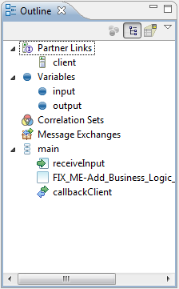

The Outline view provides a structural layout of the BPEL process. You can view the process as either a hierarchical tree-structured outline () or as a thumbnail view (), by pressing the associated button.

Outline view